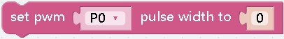
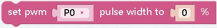
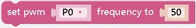

PWM¶
 ¶
¶
effect： pwm pin object
 ¶
¶
effect： set the servo angle
parameter： It can only be a numerical value, indicating the angle you want to set, between -90 and 90
¶
effect： Set the pwm value directly to adjust the “strength” of the pin
parameter： 0~4095
¶
effect： Set the pwm value by percentage
parameter： 0.00~1.00
¶
effect： Set the evaluation rate of the pin to 50 (cycle 20 milliseconds)
 ¶
¶
effect： Set the clock rate of the pin pwm unit